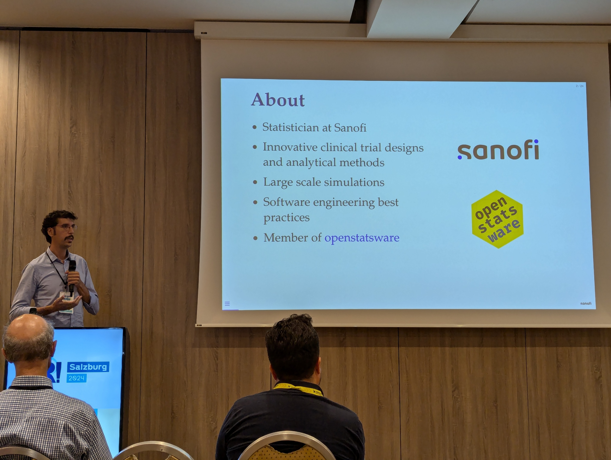

The first in-person UseR! conference after the Covid pandemic took place between 8 and 11 July 2024 in Salzburg, Austria. Hosted by Roche and the Ludwig-Maximilians-Universität München (Munich) with support by the R Consortium and Linux Foundation, this event brought together about 500 in person attendees as well as virtual participants and presenters. See here for the conference website which also links to the conference agenda (includes slides for download, where made available by the presenters) and free recordings. See also UseR! talks assembled by rOpenSci.
From openstatsware attended:
- Daniel Sabanés Bové (RCONIS)
- Friedrich Pahlke (RCONIS)
- Gregory Chen (MSD)
- Joseph Rickert (R Consortium)
- Lars Andersen (Boehringer Ingelheim)
- Sergio Olmos (Sanofi)
- Will Landau (Lilly)
- Wilmar Igl (ICON)
- Yann Féat (mainanalytics)

Here a couple of them will state their highlights from the conference and summarize their contribution to the conference.
Joseph: “The UseR! 2024 conference, which was organized by the R Foundation, Roche, and the Ludwig-Maximilians-Universität München, and financed by the R Consortium was the first in-person event since 2019. It provided a much needed opportunity for R users to establish friendships and meet face-to-face with luminaries from the R world including Kurt Hornik, Uwe Ligges, and Simon Urbanek from the R Core Group and CRAN and Peter Dalgaard,Tomas Kalibera, Martin Mächler, Luke Tierney from the R Core Group, and Hadley Wickham and others from his development team at Posit.”
Wilmar: “I attended my 1st UseR! conference in 2024 to present a personal project to promote civil participation in political decision-making based on R/Shiny technology. The fact that this talk was accepted illustrates the openness of the community and the wide range of potential applications of R and affiliated open-source technologies in society. The conference covered a wide range of other topics in data science and statistics with too many (personal) highlights to mention. The UseR! conference was also special for me because it allowed me to meet many colleagues in real life, whom I have been meeting up with virtually over the last year. Finally, one cannot write about the UseR! conference without mentioning the special vibe of a friendly, inclusive and fun environment, where you can also rub shoulders with long-time champions and rising stars of the R community. UseR! will definitely be on the list of top conferences for the years to come!”
Yann: “The energy at this conference was incredible. It brought together famous contributors to the R ecosystem and newcomers around topics that are important to me, such as software engineering, statistics, data visualization, reproducibility, etc. This made for interesting and diverse presentations, and more stimulating discussions than one can count. I myself had the opportunity to present the work of the R Validation Hub’s Regulatory R Package Repository, and it was a pleasure to exchange ideas on this topic in person. I look forward to future UseR! conferences!”
Daniel: “I almost can’t believe it, but indeed this was the first UseR! conference I attended. I feel honored to have been part of the organizing and program committee, so I contributed a tiny part to the overall conference organization. It was absolutely amazing to meet so many R community members in person, many of whom I knew by name or video already. Also it was very special to have many R core members mixing with the crowd, giving comments, asking questions, reminding us how R was born in keynote presentations. I really hope that there will be another UseR! conference soon (not just in 5 years) and that I will be able to attend it again. This time, I gave an openstatsware workshop on good software engineering practice for R packages together with Friedrich, presented the {mmrm} package built by openstatsware, and got feedback on the openstatsguide by openstatsware in the poster session. It was great to bring in so much openstatsware to UseR! 2024 😁”
Friedrich: “Attending the UseR! 2024 conference in Salzburg was a truly enriching experience. This event marked my first in-person UseR! conference, and it exceeded all my expectations. The conference provided an incredible platform for learning and connecting with fellow R enthusiasts. It was especially rewarding to co-lead a 3.5-hour tutorial on ‘Good Software Engineering Practice for R Packages’ alongside Daniel Sabanés Bové. Our session focused on equipping participants with essential tools and techniques for developing robust and reliable R packages, which was met with great enthusiasm. In addition to the tutorial, I had the opportunity to present on ‘Engineering a Reliable R Package for Regulatory Use Using {rpact} as an Example.’ This talk gave me the chance to highlight the six-year journey of developing the {rpact} package, a tool crucial for confirmatory adaptive clinical trials. I discussed how our validation framework, inspired by GAMP 5 principles, has been instrumental in achieving high levels of automation and reliability, ensuring compliance with stringent regulatory standards. As a co-founder of RCONIS, our new joint venture that also sponsored the conference, it was an honor to contribute to this fantastic event. Beyond my official roles, I also enjoyed capturing memorable moments as the conference photographer. The entire experience left me eagerly anticipating future UseR! conferences and the continued growth of the R community.”